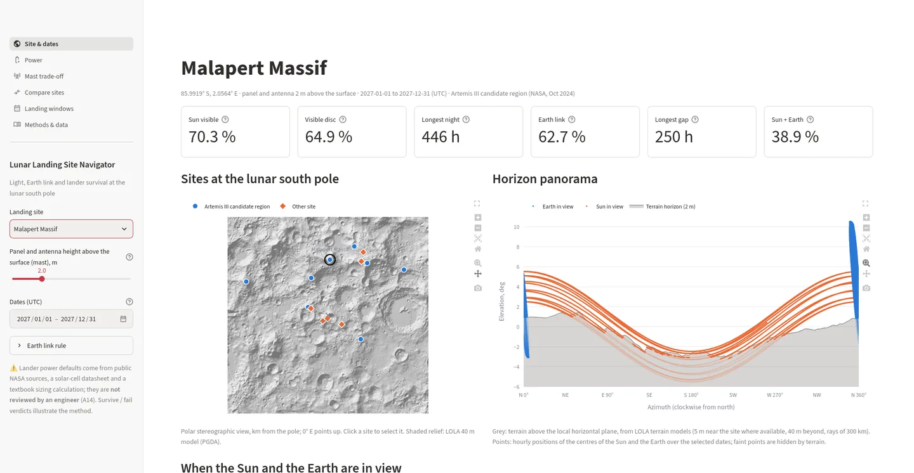
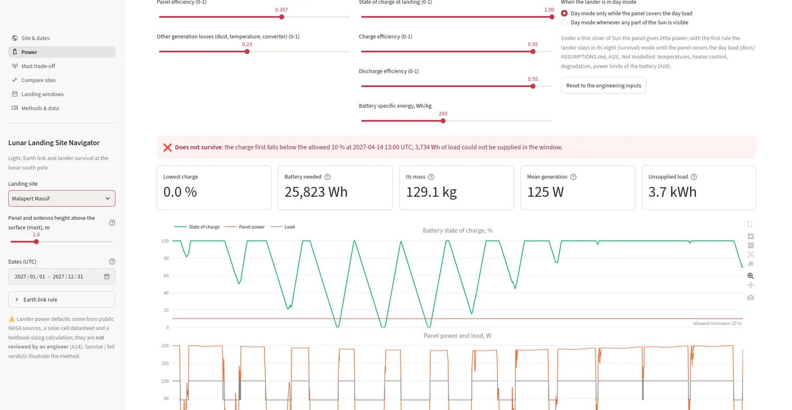
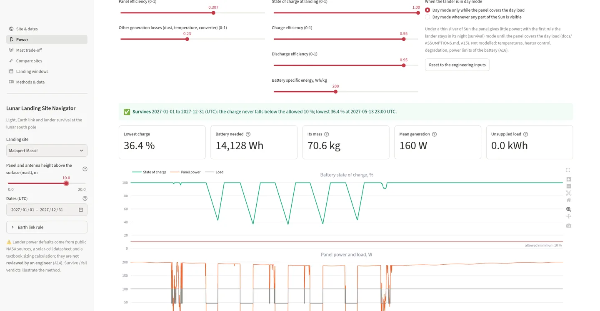
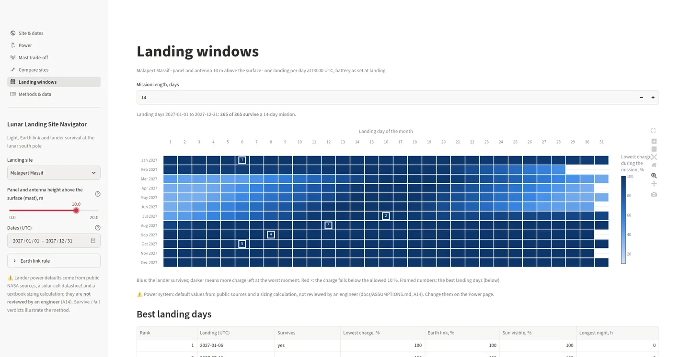

NASA Space Apps Challenge 2026
Lunar Landing
Site Navigator
Will this lander survive at this lunar south-pole site on these dates, and how much does a mast help?
· Challenge: Lunar Landing Site Navigator
The Moon on these slides is our data: LOLA terrain of the south pole, 440 km across. Dots: the 15 candidate sites of the tool.
The problem
At the south pole the Sun and the Earth skim the horizon
- The Sun never climbs higher than 2° to 8° at the candidate sites; the Earth swings by about ±7°.
- So the terrain around the exact spot, the dates and the height of panel and antenna decide whether a lander has power and a line home.
- Illumination maps say how often. Engineers need: does my lander survive here, then?
Replay of our data, not a drawing: Malapert Massif, panel 2 m above the surface, 8 April to 21 May 2027, hour by hour. Terrain horizon from LOLA, Sun and Earth from SPICE; discs to the vertical scale.
The tool
Three clicks to an engineering answer
1
Pick a site and dates
Map, real terrain horizon, paths of the Sun and the Earth
2
Dial in your lander
Panel, battery, loads: hour-by-hour charge, survives or not
3
Raise the mast
The same lander on 10 m: the verdict flips
15 sitesany dates 2027–20296 pagesanswers in about a second
lunar-navigator-nasa.streamlit.app



Real screens of the app. Also inside: mast trade-off, site comparison, landing calendar with the best days, methods and data.
NASA data make it possible
Real terrain, real ephemerides, checked against NASA references
NASA open data
LOLA terrain models
Laser altimetry of LRO, from the NASA PGDA archive: 5 m models of the sites (product 78) and 40 m for 80–90° S (product 90)
SPICE kernels (NAIF)
DE440 ephemeris and lunar orientation: where the Sun and the Earth stand, every hour of 2027–2029
Space agency partner
CSA Moon exploration pages: mission context (no number comes from them)
Our pipeline
Terrain horizon
720 azimuths × 5 mast heights × 15 sites, rays of 300 km with exact spherical geometry
Visibility → power → verdict
Share of the solar disc above the terrain, hourly battery balance, the smallest battery solved exactly
Earth link
Line-of-sight windows and an X-band link budget
Independent checks
JPL Horizons
Sun and Earth directions: largest difference °
LOLA illumination maps (PGDA 69)
18.6-year averages: mean difference points (Sun / Earth)
Wueller et al. 2026, JGR Planets
Longest sunlit spells: within one day
LROC WAC mosaic
Our horizon peaks land on the real massifs and rims
automated tests · every file with URL and checksum in docs/SOURCES.md · full report in docs/VALIDATION.md
The engineering answer
A 10 m mast turns failure into survival
Malapert Massif · the year 2027 · default lander, 20 kWh battery
Panel at 2 m
100 %
does not survive 2027
On a 10 m mast
100 %
survives: never below %
Battery needed for the year
Time with the Sun in view
Longest night
Connecting Ridge: → kWh. At Haworth the horizon is 50 km away: sunlight only → %. Lander values from public NASA sources and a sizing calculation, not reviewed by an engineer.
horizon at 2 mhorizon from a 10 m mastSun here: only the mast sees it
Same replay, same dates; the batteries on the left follow the hourly simulation of the app.
Same replay, same dates; the batteries on the left follow the hourly simulation of the app.
Honest limits · what is next
A first-pass filter, not a mission design
What it does not know yet
- A visible Sun is not yet power; a visible Earth is not yet a radio link.
- Not modelled: dust, temperatures and heaters, the lander's own shadow, ground-station schedules, relays, boulders.
- The default lander comes from public NASA sources and a textbook sizing; no engineer has reviewed it, and the app says so.
Next
- Thermal loads and heater power; ground stations and relay satellites.
- A reviewed lander design in place of the default one.
Landing windows

Already in the app: every landing day of 2027 scored for a 14-day mission, the best days framed.
The goal: any team planning a polar landing tests a site, a date and a lander in seconds, before the detailed analyses.
Touchdown
Know before
you land.
Pick the site. Pick the dates. See whether your lander survives, and what a mast changes.
· Challenge: Lunar Landing Site Navigator
Closing scene: AI-generated illustration. A dream, not a mission plan.
Lunar Landing Site Navigator
NASA Space Apps Challenge 2026
AUTOPLAY · A to stop
PDF1 / 7
AI-generated deck: visuals, illustrations and animation made with Claude (AI) · numbers computed from NASA LOLA and SPICE data by our code